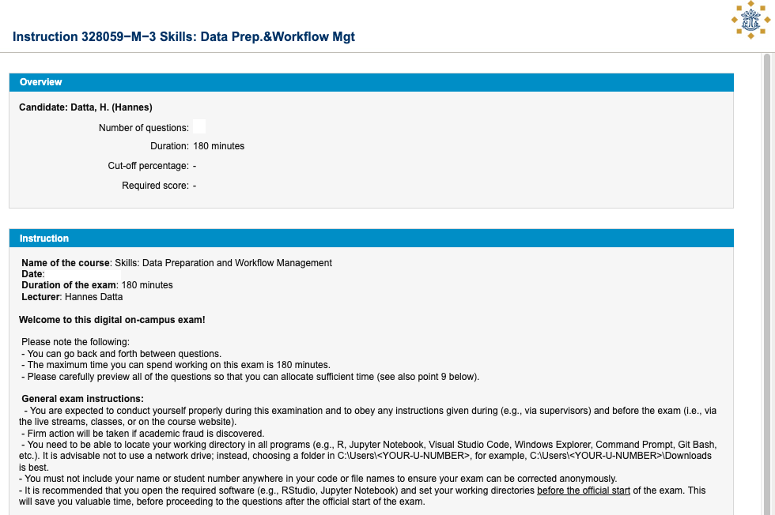
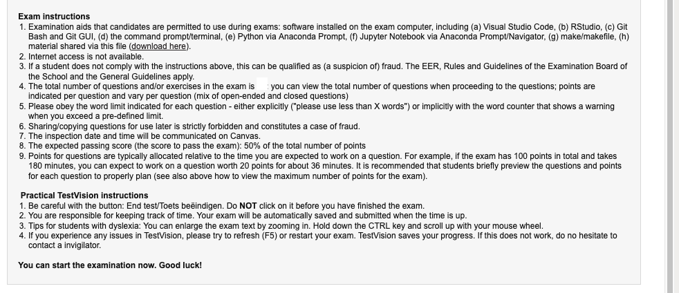
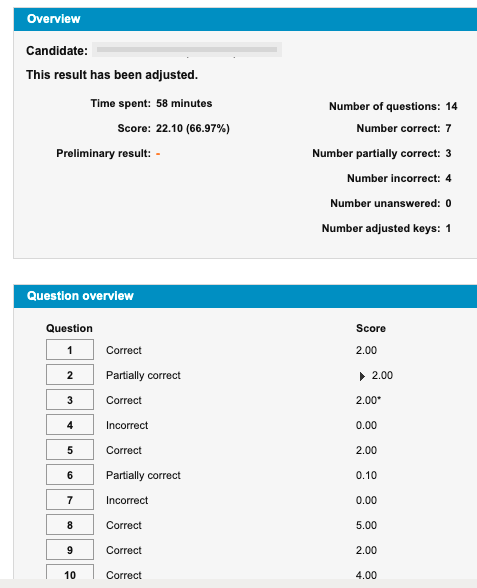
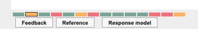
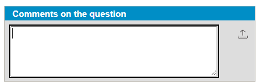

Exam Preparation
Data Preparation & Programming Skills (328059-M-6)
Introduction
Overview
The exam for this course is a 120-minute on-campus computer exam (course code 328059-M-6), taken in TestVision. It is a closed-book exam with no internet access, though students may download selected cheat sheets from the exam’s introduction page.
Students taking the discontinued 3 ECTS version should prepare using the exam material from the previous semester.
Key points to keep in mind:
- four exam dates are offered each academic year, of which students may take part in at most two.
- only the official exam “cheatsheets” are permitted; no other resources or communication tools are allowed.
- communication with others about the exam is strictly forbidden.
- do not include your name or student number in submitted files unless explicitly asked, to ensure anonymous grading.
Exam Format
The exam consists of a mix of open questions (requiring open-text answers or file uploads) and closed questions (such as multiple-choice, ranking, or matching). These questions are organized according to the learning goals of the course, and the content for each learning goal will be drawn from both the tutorials and the course book1.
The exam is worth a total of 120 points, corresponding to roughly one point per minute of work. This design should help you pace yourself and prioritize your effort during the exam.
In terms of cognitive skills, the exam does not stop at testing factual recall. Instead, it follows Bloom’s taxonomy of learning objectives, which means you will be assessed across different levels of thinking:
- Knowledge & Comprehension – recalling key concepts and demonstrating understanding of methods and ideas.
- Application – using techniques or code you have learned in tutorials and lectures to solve new problems.
- Analysis – breaking down complex tasks (e.g., a dataset or research workflow) into their component parts and reasoning about them.
- Synthesis – combining different elements (e.g., data, code, and interpretation) to produce a coherent result.
- Evaluation – critically judging the suitability of an approach or comparing alternative solutions.
Together, these levels ensure that the exam does not merely check whether you remember material, but also whether you can apply, integrate, and evaluate it in realistic scenarios.
Overview of Questions
The table below outlines the types of questions you can expect, along with their sources for each learning goal of the course.
| No. | Learning goal | Question type | Questions based on tutorials | Questions based on book |
|---|---|---|---|---|
| 1 | Use R to clean and transform data for analysis | Synthesis | 20P on engineering tutorial | 4P (1Q), ch. 7 |
| 2 | Use GitHub for managing empirical research projects | Eval. | 12P (4Q), ch. 2, 5 | |
| 3 | Use Git/GitHub for versioning files and collaboration | Appl. & Eval. | 24P on GitHub tutorial | 12P (4Q), ch. 6 |
| 4 | Use R for generating automatic reports | Compreh. & Appli. | 10P on Rmarkdown tutorial | 8P (2-3Q), ch. 4 |
| 5 | Use Workflow Management Tools | Appl. & Eval. | 24P on Make tutorial | 6P (2Q), ch. 3, 8 |
Example Questions
This section provides example questions, organized by the learning goals of the course. Supporting materials (e.g., datasets or zip files for practice) can be downloaded via the provided links in each subsection. During the exam, such downloads will be made available directly in TestVision (e.g., on the introduction page of the exam, or within specific questions).
Learning Goal 1
Use R to clean and transform data for analysis (e.g., aggregation, merging, de-duplication, reshaping, data conversions, regular expressions)
Exemplary question based on tutorials (20P on the exam)
Please download the netflix_data file, containing an .RData environment that itself contains R objects (datasets).
netflix_data:
show_id: content identifiertitle: Title namecountry_of_origin: Country of productionviewership_country: Country where the content’s viewership data is recordeddate: Date of recording datagenres: Genres the content is classified intotype: Type of content (“Movie” or “TV Show”)season_count: Number of seasonsrelease_date: Date when the content was released on Netflixshow_rating: Average rating given to the contentviewership_count: Number of viewers for the content
Please answer the following questions using this data.
Q1.1: Handing missing values
Which columns in the dataset contain missing values, and how many missing values does each column have?
Check for patterns in the missing values for the column
season_countdepending on show type. Do these missing values need to be imputed? Why or why not?There are missing values in both
show_ratingandviewership_count. Justify and use appropriate strategy to impute missing values and add a column that indicates whether the values have been interpolated or not.
Solution:
library(tidyverse)
library(zoo)
# a. Count missing values per column
na_summary <- netflix_data %>%
summarise(across(everything(), ~sum(is.na(.))))
# b. Inspecting season count missing values
season_missing_check <- netflix_data %>%
group_by(type) %>%
summarise(missing_seasons = sum(is.na(season_count)), total_shows = n())
# All the movies have NA for season count which makes sense so no need to impute them.
c. # We can use linear interpolation for show_rating as
# ratings gradually change over time. `viewership_count` column
# can be interpolated using Last Observation Carried Forward as they
# should be relatively stable.
# Store original NA locations
netflix_data <- netflix_data %>%
mutate(
was_na_show_rating = is.na(show_rating),
was_na_viewership = is.na(viewership_count)
)
# Apply interpolation (grouped by `show_id` and `viewership_country`)
netflix_data <- netflix_data %>%
group_by(show_id, viewership_country) %>%
mutate(
show_rating = na.approx(show_rating, na.rm = FALSE), # Linear interpolation
viewership_count = na.locf(viewership_count, na.rm = FALSE)
# Last observed value carried forward
) %>%
ungroup()
# Create interpolation indicator
# (TRUE if the value was NA before but now has a value)
netflix_data <- netflix_data %>%
mutate(
is_interpolated_show_rating = was_na_show_rating & !is.na(show_rating),
is_interpolated_viewership = was_na_viewership & !is.na(viewership_count)
) %>%
select(-was_na_show_rating, -was_na_viewership) # Drop temp columns
Q1.2: Using Regular Expressions
Some shows belong to multiple genres which are stored in the genre column as comma-separated string. Use regular expressions to create a new dummy column is_action that is 1 if the genre column contains “Action” genre and 0 otherwise.
Solution:
netflix_data <- netflix_data %>%
mutate(is_action = ifelse(grepl("Action", genres, ignore.case = TRUE), 1, 0))
table(netflix_data$is_action)Q1.3: Using Regular Expressions
Let’s say we want to analyze how viewership for a specific show (SHOW_10) varies across different countries over time. Subset the viewership data for this show and convert the data to wide format.
Solution:
show_10_data <- netflix_data %>%
filter(show_id == "SHOW_10") %>%
select(date, viewership_country, viewership_count)
# Convert to wide format
show_10_wide <- show_10_data %>%
pivot_wider(
names_from = viewership_country,
values_from = viewership_count,
names_prefix = "viewership_"
)Q1.4: Estimation and Plotting at Scale
Please estimate a linear regression to examine the impact of a show being listed as “Action” genre on viewership for different viewership countries. Use a for loop to estimate at scale.
Solution:
library(ggplot2)
countries <- unique(netflix_data$viewership_country)
effect_sizes <- data.frame(viewership_country = character(),
estimate = numeric(), stringsAsFactors = FALSE)
# Loop through each country and estimate regression
for (country in countries) {
# Filter data for the current country
country_data <- netflix_data %>%
filter(viewership_country == country, !is.na(is_action), !is.na(viewership_count))
# Run the regression model
model <- lm(viewership_count ~ is_action, data = country_data)
# Get the coefficient for is_action
beta_1 <- coef(model)["is_action"]
# Store the result
effect_sizes <- rbind(effect_sizes,
data.frame(viewership_country = country, estimate = beta_1))
}
# Plot the effect sizes
ggplot(effect_sizes, aes(x = reorder(viewership_country, estimate),
y = estimate, fill = estimate)) +
geom_bar(stat = "identity") +
coord_flip() +
labs(title = "Effect of Action Genre on Viewership by Country",
x = "Country",
y = "Effect Size (Coefficient of is_action)") +
theme_minimal()Exemplary questions based on book (4P on the exam)
Q1.5
You are tasked with building a dataset to study the effect of advertising on customer churn. Which of the following dataset designs would best synthesize the principles described in Marketing Analytics: A Modern Toolkit?
- One row per ad impression with variables for user ID, timestamp, and product purchased
- One row per customer per day with variables for total impressions, purchases, and weather in that region
- One row per customer per week with aggregated ad exposure, total purchases, and churn status (flagged if no purchases in 90 days)*
- One row per region per month with variables for average basket size and average temperature
Correct Answer: C
Explanation:
- C is correct because Marketing Analytics: A Modern Toolkit emphasizes aligning the dataset’s unit of analysis with the research question. Studying churn requires customer-level information, while churn is often defined over a fixed period (e.g., 90 days), making a weekly structure appropriate. It also reflects operationalization (defining churn as a flag) and aggregation (summing exposures and purchases).
- A is incorrect because per-impression data is too granular and does not capture churn.
- B is incorrect because daily customer-level data introduces unnecessary noise, and churn is not measured at the daily level.
- D is incorrect because region–month aggregation ignores individual-level churn dynamics.
Q1.6
You discover that your marketing dataset contains missing user IDs, duplicate transactions, and inconsistent date formats. Which sequence of operations reflects a sound data engineering workflow consistent with Marketing Analytics: A Modern Toolkit?
- Aggregate → Merge → Reshape → Clean
- Clean → Standardize → Aggregate → Merge → Reshape
- Merge → Aggregate → Clean → Anonymize
- Reshape → Clean → Aggregate → Merge
Correct Answer: B
Explanation:
- B is correct because the book stresses that analysts must first clean and standardize raw inputs (handle duplicates, fix missing values, align formats). Only then should they aggregate to the proper unit of analysis, merge sources on shared keys, and finally reshape into the long or wide formats needed for analysis or reporting.
- A is flawed because aggregating before cleaning may preserve errors.
- C merges too early, propagating inconsistencies.
- D reshapes before cleaning, which contradicts the principle of first ensuring validity and consistency.
Q1.7
Imagine you need the same dataset for both a regression model and a marketing dashboard. How should you structure and prepare the data to meet both needs?
- Store everything in long format, since models and dashboards both require this
- Store everything in wide format, since models and dashboards both require this
- Prepare a core dataset at the correct unit of analysis, and reshape into long or wide format depending on the task
- Duplicate all sources: one version in long format and one in wide format, maintained separately
Correct Answer: C
Explanation:
- C is correct because Marketing Analytics: A Modern Toolkit highlights that the same derived dataset can serve multiple purposes if it is first harmonized at the right unit of analysis. Analysts can then pivot between long format (suitable for regressions) and wide format (suitable for dashboards).
- A is incorrect because dashboards typically need wide data, not long.
- B is incorrect because regressions usually expect long data.
- D is inefficient and risks divergence across duplicated datasets, which the book warns against.
Q1.8
You are asked to recommend a data platform strategy for a firm with diverse marketing data: structured transactions, semi-structured web logs, and terabytes of ad impression data. Which option best reflects the trade-offs described in Marketing Analytics: A Modern Toolkit?
- Use only relational databases like PostgreSQL because they enforce structure and consistency for all data types
- Use only NoSQL databases like MongoDB because they are more flexible for all business needs
- Store everything in cloud warehouses like Snowflake, regardless of cost or structure
- Use relational databases for structured data, NoSQL systems for semi-structured data, and cloud warehouses for scalability—choosing platforms based on data type and scale
Correct Answer: D
Explanation:
- D is correct because the book explains that different platforms serve different roles: relational databases excel with structured transactional data, NoSQL handles semi-structured or network data, and cloud warehouses offer scalability for massive datasets. The recommended approach is to choose the right tool for the right type of data, not a one-size-fits-all solution.
- A is too rigid, as relational systems struggle with unstructured/semi-structured data.
- B is too broad, as NoSQL sacrifices consistency and standardization.
- C ignores the book’s caution about matching platforms to context, not just scale.
Learning Goal 2
Use GitHub for managing empirical research projects (e.g., GitHub Issues and Project Boards)
Exemplary question based on book (12P on the exam)
Q2.1 (based on chapter 2)
A student argues that every project should include Docker, CI/CD pipelines, and a cloud warehouse because “more tools always make a project better.” Based on Marketing Analytics: A Modern Toolkit, how should you evaluate this claim?
- Agree, because advanced tools always increase efficiency regardless of project size
- Agree, because cloud and automation are universally recommended best practices
- Disagree, because the book stresses that tools add complexity and should be matched to project scope and needs
- Disagree, because small projects should avoid all infrastructure beyond RStudio
Correct Answer: C
Explanation: C is correct because Marketing Analytics: A Modern Toolkit emphasizes that “more is not always better.” Tools like Docker and CI/CD add learning costs and maintenance overhead. They are valuable for large, long-term projects but unnecessary for small, quick tasks. A is wrong because advanced tools may reduce efficiency in small projects. B is wrong because best practices must be adapted, not applied universally. D is wrong because small projects still benefit from basics like version control and folder structure.
Q2.2 (based on chapter 2)
Two thesis students disagree on environment management. One says, “We don’t need renv; if a package updates, we’ll just install the new version.” The other says, “renv is essential, because without it our results may change unpredictably.” Which evaluation best aligns with Marketing Analytics: A Modern Toolkit?
- The first student is right, because updating packages ensures you always use the most recent, reliable code
- Both students are equally right, since package management is optional
- The second student is right, because the book stresses reproducibility depends on locking package versions
- Neither is right, since reproducibility is not affected by package management
Correct Answer: C
Explanation: C is correct because Marketing Analytics: A Modern Toolkit explains that reproducibility requires code to run the same across time and machines. Tools like renv lock package versions, avoiding “it worked then, but not now” issues. A is wrong because constant updates can break old code. B is wrong because package management is not optional for reproducibility. D is wrong because package versions directly affect whether results can be replicated.
Q2.3 (based on chapter 2)
Your marketing team is debating whether to store intermediate datasets as separate files (“raw,” “data-prep,” “analysis”) or overwrite data at each step to save storage. Based on Marketing Analytics: A Modern Toolkit, how should you evaluate these two approaches?
- Overwriting is best, since it minimizes clutter and storage costs
- Keeping staged folders is better, because it preserves reproducibility and traceability of data transformations
- Both approaches are equally valid, since storage concerns outweigh reproducibility issues
- Neither approach is useful; data should always be pulled directly from the original source
Correct Answer: B
Explanation: B is correct because Marketing Analytics: A Modern Toolkit recommends staged data (“raw,” “data-prep,” “analysis”) to preserve the lineage of transformations. This ensures traceability, avoids confusion about which dataset is “correct,” and supports reproducibility. A is wrong because storage is cheap compared to the cost of lost reproducibility. C is wrong because traceability is more important than minor storage concerns. D is wrong because raw sources alone don’t provide cleaned, analysis-ready data.
Q2.4 (based on chapter 2)
A mid-sized marketing team is considering whether to rely on local setups or fully migrate to the cloud. Which evaluation best reflects the guidance in Marketing Analytics: A Modern Toolkit?
- Always choose local setups, because they are simpler and cheaper
- Always choose cloud setups, because they are modern and scalable
- Choose based on project demands: local for small projects and learning, cloud for scalability, collaboration, and large data
- Avoid mixing local and cloud, because hybrid approaches cause inconsistency
Correct Answer: C
Explanation: C is correct because Marketing Analytics: A Modern Toolkit describes trade-offs between local and cloud setups. Local is suitable for small projects or learning, while cloud is better for large-scale, collaborative, or computationally heavy projects. Many teams use hybrid solutions. A is wrong because local alone cannot handle scalability. B is wrong because cloud is not always necessary or cost-effective. D is wrong because hybrid approaches are practical and often optimal.
Q2.5 (based on chapter 5)
A student team insists on adopting the full Scrum framework (Product Owner, Scrum Master, daily stand-ups, retrospectives) for their two-week class project. Based on Marketing Analytics: A Modern Toolkit, how should you evaluate this decision?
- It is the best approach, since the full Scrum framework guarantees productivity in all projects
- It is necessary, because project boards and issues cannot function without formal roles
- It is excessive, because small analytics projects benefit more from lightweight adaptations of Scrum than from its full overhead
- It is inappropriate, because Scrum principles are designed only for software engineering, not analytics
Correct Answer: C
Explanation: C is correct because Marketing Analytics: A Modern Toolkit notes that smaller analytics teams should adapt Scrum by using boards, issues, and short cycles rather than implementing every role and ceremony. A is wrong because there is no “one size fits all.” B is wrong because boards and issues can function informally. D is wrong because Scrum principles apply beyond software, including analytics.
Q2.6 (based on chapter 5)
A research group wants to manage their tasks using email and chat threads, arguing that “boards and issues are too much overhead.” How should this be evaluated according to Marketing Analytics: A Modern Toolkit?
- It is reasonable, since lightweight tools like email are more efficient than formal boards
- It is acceptable, provided that team members document progress individually in shared folders
- It is problematic, because scattering communication across multiple channels reduces transparency and reproducibility
- It is effective, because agile teams rely more on conversation than on written artifacts
Correct Answer: C
Explanation: C is correct because the book emphasizes centralizing communication in issues and boards, ensuring transparency, traceability, and shared understanding. A is wrong because email creates fragmentation. B is wrong because scattered folder notes lack integration. D misinterprets Agile — while conversation matters, artifacts like boards are essential for documentation and accountability.
Q2.7 (based on chapter 5)
A manager argues that long, open-ended work phases are better than short cycles, since they allow deeper focus without interruptions. What evaluation does Marketing Analytics: A Modern Toolkit suggest?
- Agree, because fewer check-ins mean less wasted time on meetings
- Disagree, because long cycles risk last-minute panic and reduced adaptability, whereas short cycles improve accountability and steady progress
- Agree, because analytics projects rarely change scope once started
- Disagree, because retrospectives alone are sufficient for adaptability, regardless of cycle length
Correct Answer: B
Explanation: B is correct because the book highlights that short, repeating cycles (with regular check-ins and increments) prevent last-minute rushes, improve visibility, and keep teams adaptable. A is wrong because fewer meetings can create blind spots. C is wrong because analytics projects are dynamic. D is wrong because retrospectives without short cycles delay improvements.
Q2.8 (based on chapter 5)
A student team designs a project board with 12 columns, dozens of labels, and complex workflows, claiming this will maximize precision. How should their setup be evaluated in light of Marketing Analytics: A Modern Toolkit?
- It is optimal, since detailed boards ensure no task is ever forgotten
- It is risky, because over-engineering the board can make the system itself burdensome and reduce efficiency
- It is required, since project boards only function with highly granular categorization
- It is harmless, because complexity in the board does not affect collaboration outcomes
Correct Answer: B
Explanation: B is correct because the book explicitly warns against over-engineering boards, noting that too much complexity makes them harder to use and can undermine the very efficiency they are meant to support. A is wrong because detail can overwhelm rather than help. C is wrong because simple four-column boards (backlog → to do → in progress → done) are often sufficient. D is wrong because board complexity directly influences team collaboration quality.
Learning Goal 3
Use Git/GitHub for versioning files and collaborating on privately-shared and publicly-available (open science) GitHub repositories
Exemplary question based on tutorials (24P on the exam)
Q3.1
Please download the git_repository.zip file from the exam cover page and unzip it to a folder on this computer. Open this folder using Git Bash. Imagine you are a research assistant at Tilburg University, and you receive the following email from your project supervisor. Please submit your Git repository, by zipping the folder and uploading it here.
Dear (name of student),
Tilburg University is working toward publishing not only papers, but also the code that generated the results. This is a key step for open science, as it allows others to reproduce findings. In the attachment (download here), you will find a zipped Git repository of my empirical project. Admittedly, it is not very well structured (for instance, directory structures are missing), but it does include a common R file (
run.R) that simulates demo data and ties the different parts of the project together.Starting from
run.R, please apply your learnings from dPrep and submit a link to a new repository in which you:
- Separate the workflow into individual files for the main steps of the project (e.g., simulate data, see
run.Rfor ideas),
- Separate source code from generated files by using dedicated folders,
- Add a proper README in Markdown format (
.mdfile),
- Exclude files that should not be versioned by using
.gitignore,
- Remove
run.Rand replace it with a proper makefile for the project, and
- Throughout the process, make frequent commits with clear commit messages.
I look forward to seeing your work, submitted as a clean, zipped Git repository, which you can upload below.
Solution: Please download the solution here.
Exemplary question based on book (12P on the exam)
Q3.2
A student argues that using Git locally without GitHub is sufficient for team projects, since Git already tracks the full history of changes. Based on Marketing Analytics: A Modern Toolkit, how should this claim be evaluated?
- It is correct, because Git alone provides all the functionality teams need
- It is partially correct, but without GitHub or similar platforms collaboration becomes cumbersome and less transparent
- It is wrong, because Git cannot track history without being connected to GitHub
- It is wrong, because GitHub is the only way to use version control effectively
Correct Answer: B
Explanation: B is correct because Git can indeed track history locally, but Marketing Analytics: A Modern Toolkit emphasizes that platforms like GitHub add collaboration features (issues, pull requests, project boards, cloud sync) that make teamwork efficient and transparent. A is incomplete, since Git alone doesn’t scale well for collaboration. C is wrong, because Git tracks history even offline. D is wrong, because GitHub is not the only option (GitLab, Bitbucket also work).
Q3.3
A team frequently edits files directly on the main branch because they feel branching “slows things down.” How should this practice be evaluated?
- It is acceptable, because small teams don’t need branching discipline
- It is efficient, because avoiding branches reduces unnecessary overhead
- It is risky, because main should remain stable while features are developed on branches
- It is unnecessary, because merge conflicts only happen in large projects
Correct Answer: C
Explanation: C is correct because Marketing Analytics: A Modern Toolkit stresses that main must remain clean and stable. Branching isolates new work, preventing broken or experimental code from contaminating the working version. A is wrong, since even small teams benefit from branching. B is wrong because short-term speed undermines long-term stability. D is wrong because conflicts can arise in any project, regardless of size.
Q3.4
One teammate prefers writing commit messages like “update” or “fixed stuff,” claiming that “the details are in the code anyway.” How should this be judged according to Marketing Analytics: A Modern Toolkit?
- It is fine, because code itself tells the full story of changes
- It is acceptable for small commits but not for larger ones
- It is problematic, because vague commit messages harm the usefulness of Git’s history for collaboration and reproducibility
- It is required, since Git automatically adds details from diffs anyway
Correct Answer: C
Explanation: C is correct because the book highlights that clear, descriptive commit messages are essential for making the project history understandable for teammates and your future self. A is wrong because code diffs alone are not always clear. B is wrong because even small commits should carry meaning. D is wrong because Git does not replace commit messages with diffs automatically.
Q3.5
During setup, a student decides to skip configuring .gitignore, reasoning that “more files in the repository means more transparency.” How should this decision be evaluated?
- It is correct, because everything should be tracked for maximum reproducibility
- It is incorrect, because including temporary files, datasets, or machine-specific files clutters the repo and hinders collaboration
- It is acceptable, because .gitignore is only needed for very large software projects
- It is beneficial, because GitHub automatically filters out irrelevant files anyway
Correct Answer: B
Explanation: B is correct because Marketing Analytics: A Modern Toolkit stresses that .gitignore keeps repositories clean, avoiding bloat, conflicts, and accidental sharing of irrelevant or sensitive files. A is wrong, because too much tracking reduces clarity. C is wrong, since .gitignore is critical for all project sizes. D is wrong, because GitHub does not automatically filter files.
Q3.6
A colleague suggests skipping pulling before starting work, saying it “only matters if two people edit the same file at the same time.” How should this suggestion be evaluated?
- It is harmless, because conflicts can always be resolved later
- It is efficient, because it avoids unnecessary downloads from GitHub
- It is flawed, because failing to pull first risks working on outdated files and almost guarantees conflicts
- It is valid, because Git automatically merges any differences in the background
Correct Answer: C
Explanation: C is correct because the book stresses always pull first to synchronize with the remote repository before starting work. This minimizes conflicts and ensures you are building on the latest version. A is wrong, since conflicts are harder to fix after the fact. B is wrong, because pulls are lightweight and prevent bigger problems. D is wrong, because Git requires manual resolution for conflicts.
Learning Goal 4
Use R for generating automatic reports (e.g., to assess data quality, to report research findings in a paper) and deploying research findings in novel ways (e.g., apps)
Exemplary questions based on tutorial (10P)
Q4.1
Imagine you have just enrolled as a thesis student, and you receive the following email from your advisor. Submit your PDF document, and provide a conclusion on the suitability of the explored data for the research question.
Dear (name of student),
I really look forward to working with you on this exciting dataset, capturing the consumption of music on Spotify. I scraped it from spotifycharts.com a while ago. Please download this
spotify_data.zip, which contains the data in a CSV file.As a starting point, please explore the data set using RMarkdown. I’d love to learn more about the data myself (haven’t looked into it yet). Can you create a plot with
ggplot2to shed some light on how the start of the global pandemic (let’s assume that was March 2020) affected music consumption (streams)?Please render your RMarkdown as a PDF document. Please keep any code that you’re writing (e.g., to load the data, or to explore and do some minor data preparations and create the plot) visible so I can learn from it (and grade it!)…!
Solution: Available for download as Rmd and rendered .pdf - recall, you will have to submit it as a rendered PDF document!.
Exemplary question based on book (8P on the exam)
Q4.1 (Comprehension)
Which of the following best captures the distinction between reproducibility and replicability as described in Marketing Analytics: A Modern Toolkit?
- Reproducibility checks whether insights generalize across contexts; replicability checks whether conclusions hold under alternative methods
- Reproducibility is about rerunning the same analysis with the same data; replicability is about getting similar results when applying the same analysis to new data
- Reproducibility means results remain robust to alternative models; replicability means results remain interpretable across audiences
- Reproducibility refers to file organization; replicability refers to dataset quality
Correct Answer: B
Explanation: The book defines reproducibility as rerunning the same analysis on the same data and obtaining the same results, and replicability as achieving similar results when applying the same analysis to new data.
Q4.2 (Comprehension)
Why does the book emphasize keeping raw data raw in marketing analytics projects?
- Because raw data files are smaller than processed ones
- Because cleaning raw data directly makes analysis faster
- Because maintaining an untouched source ensures a trustworthy reference point if errors occur later
- Because most statistical models require only raw data
Correct Answer: C
Explanation: The principle is to never overwrite raw data. An untouched version acts as a “source of truth” that analysts can always return to, protecting credibility and avoiding irreversible mistakes.
Q4.3 (Comprehension)
According to Marketing Analytics: A Modern Toolkit, what is the main risk of writing clever but dense code instead of clear code?
- Clever code usually runs more slowly
- Clever code makes debugging impossible in R
- Clever code cannot be executed outside RStudio
- Clever code is harder for collaborators to understand, maintain, and extend
Correct Answer: D
Explanation: The book stresses that while clever code may be fun, clarity is more valuable. Code that is easy to read and understand supports collaboration, long-term maintenance, and reproducibility.
Q4.4 (Comprehension)
Why are scripts, R Markdown, and Quarto considered essential formats for saving code, not just results?
- Because they automatically detect and remove coding errors
- Because they integrate raw data directly into cleaned outputs
- Because they preserve the chain of analysis, making results reproducible and updateable
- Because they prevent data from being overwritten during cleaning
Correct Answer: C
Explanation: The book emphasizes that these formats allow analysts to regenerate results and update analyses with new data, ensuring that outputs are not isolated artifacts but linked to the underlying code and process.
Q4.5 (Application)
You are analyzing campaign response data and decide to immediately implement a complex deep learning model. The model takes days to tune and performs poorly. Based on the principles in Marketing Analytics: A Modern Toolkit, what should you have done first?
- Used conditionals to automatically rerun the model until accuracy improved
- Started with a simple baseline model such as logistic regression, then refined if needed
- Written code in a single long script to ensure all steps are connected
- Avoided reproducibility practices to focus on speed
Correct Answer: B
Explanation: The principle “Start simple, then improve” reminds analysts to begin with straightforward, interpretable solutions before experimenting with more complex methods. This ensures clarity, reliability, and efficiency.
Q4.6 (Application)
A student receives new customer transaction logs and edits them directly in Excel, overwriting the original file. Later, errors appear and no one can trace the source. How should the student have applied programming principles?
- By saving results only in final plots and tables
- By always keeping a raw, untouched dataset and performing cleaning steps in code
- By using more clever one-line commands in Excel
- By deleting intermediate files to reduce clutter
Correct Answer: B
Explanation: The book’s principle “Keep raw data raw” means storing untouched source files and carrying out all cleaning programmatically, so the analysis can be reproduced and mistakes traced back.
Q4.7 (Application)
While building a churn model for five countries, a student copy-pastes the same block of code five times, changing only the country name. Which programming concept should they apply instead?
- Data frames
- Conditionals
- Loops
- Factors
Correct Answer: C
Explanation: The book explains that loops eliminate repetitive copy-paste coding by automating tasks across multiple elements (e.g., countries). This makes workflows scalable, clear, and less error-prone.
Q4.8 (Application)
Two analysts collaborate on a project. One uses filenames like final2.csv and newfinal_last.csv, while the other organizes files into data/raw/, data/data-prep/, and data/analysis/. According to the principles in Marketing Analytics: A Modern Toolkit, which approach is preferable and why?
- The first, because ad-hoc naming saves time during analysis
- The second, because consistent structure improves navigation, collaboration, and prevents mistakes
- Both are equally valid, since filenames don’t affect reproducibility
- Neither, because reproducibility depends only on statistical modeling
Correct Answer: B
Explanation: The principle of consistency and organization stresses that a clear folder structure and systematic naming reduce confusion and make collaboration professional and efficient.
Learning Goal 5
Use Workflow Management Tools to create and run portable, automated, and reproducible research pipelines
Exemplary question based on tutorial (24P)
Q5.1
Please download and unzip the research pipeline of an empirical project and answer the following questions. To receive points on this question, you need to zip and upload the updated research pipeline for grading.
Q5.1a) Please run make as is. Then, fix any errors that prevents make from knowing it is “up-to-date” (i.e., make may have built the entire project, but continues to re-execute the workflow even if run successfully) (5P).
Q5.1b) The make pipeline is not properly configured (i.e., one call to all scripts, rather than subsequent “built recipes” that tie all source code files together). Please fix the makefile such that the entire project is being built and that all dependencies are correctly defined. (10P)
Q5.1c) You may recall the value of creating subdirectories to structure your project. Create the necessary subdirectories and update your makefile so that it works on this new directory structure. (5P)
Requirements/tips:
- Recall make is always executing the “first” recipe it encounters.
- If you need to create new directories from within R, you can use
dir.create('directory_name'). - Please use the Windows Command Prompt or Anaconda Prompt to run R or make from the command prompt. When using the command prompt through the terminal in RStudio, it may happen that some of the installed packages cannot be found.
Solutions:
Q5.1a) The target logit_model.csv was not set correctly.analysis_and_report.R creates a file called logit_model_summary.csv. Hence, make will be looking for a file called logit_model.csv, which is never created. Therefore, it will not “know” it is “up-to-date”.
Q5.1b) See below.
```
# Makefile to automate the email marketing analysis
# An overarching "all" rule that requests the final output files
all: logit_model_summary.csv conversion_engagement_plot.png summary_stats.csv
# Rule to create the processed dataset
processed_email_data.csv: data_process.R
Rscript data_process.R # Use Rscript to run the R file
# Rule to generate final output files; depends on processed data and analysis script
logit_model_summary.csv conversion_engagement_plot.png summary_stats.csv: processed_email_data.csv analysis_and_report.R
Rscript analysis_and_report.R
# Clean rule to remove generated files
clean:
R -e "unlink('*.csv')"
R -e "unlink('*.png')"
```
Q5.1c) Temporary files (i.e., processed_email_data.csv) need to be stored in temp. All source code needs to be stored in src, and the final output files need to be put into output. See here for all modified source files (which includes the .R scripts - see file directories and commands to create new directories!).
Exemplary questions based on book (6P on the exam)
Q5.2 (chapter 3)
A team insists on keeping every single version of their 500 GB dataset after each cleaning step. As an advisor, how should you evaluate this practice?
- It is best practice because reproducibility requires storing every version of data
- It is inefficient, since reproducibility can be achieved by keeping raw data plus source code that regenerates outputs
- It ensures transparency, so it should always be done despite storage costs
- It is necessary for scaling pipelines to cloud servers
Correct Answer: B
Explanation: The book stresses that reproducibility does not require saving every intermediate dataset. Instead, storing raw data and source code is sufficient, since generated files can be recreated. This avoids massive storage waste while preserving reproducibility.
Q5.3 (chapter 3)
Suppose a student pipeline skips the data exploration stage and goes straight into preparation and analysis. How would you evaluate the credibility of their results?
- Strong, because skipping exploration accelerates analysis
- Weak, because exploration provides necessary audits (e.g., missing values, outliers) to ensure the data makes sense
- Neutral, since exploration is optional when datasets come from reliable company sources
- Strong, because reproducibility depends only on source code and raw data
Correct Answer: B
Explanation: According to the book, exploration is critical for credibility. Without it, analysts risk basing analyses on flawed assumptions (e.g., unnoticed outliers, missing values). Exploration builds trust in later steps.
Q5.4 (chapter 3)
A firm decides to deploy its results only as static reports (e.g., PDFs) rather than dashboards or reusable code. How would you assess this decision from a pipeline perspective?
- Adequate, since static reports are reproducible and require no extra infrastructure
- Limiting, since deployment should maximize usability and impact for different audiences
- Optimal, since reports preserve the “final word” of the analysis
- Necessary, since dynamic outputs violate the reproducibility principle
Correct Answer: B
Explanation: The book notes that deployment is about impact. While reports may be fine in some contexts, limiting outputs to static formats prevents managers or collaborators from exploring or reusing results. Pipelines should deliver results in formats that maximize usefulness.
Q5.5 (chapter 3)
Two teams take different approaches:
- Team A treats generated files (clean datasets, figures) as permanent, storing all versions.
- Team B treats generated files as temporary, keeping only raw data + source code.
Which approach aligns more closely with the principles in Marketing Analytics: A Modern Toolkit?
- Team A, because generated files are the most valuable artifacts
- Team A, because reproducibility depends on storing every output
- Team B, because generated files can always be recreated, making pipelines leaner and more scalable
- Team B, but only if they also delete raw data after outputs are created
Correct Answer: C
Explanation: The book highlights that generated files are recreatable artifacts, so they do not need to be stored permanently. This separation of raw data, source code, and generated files keeps projects tidy and reproducible without unnecessary storage costs.
Q5.6 (chapter 3)
When evaluating a marketing analytics pipeline, which of the following omissions would most seriously undermine transparency and auditing?
- Failing to use .gitignore to filter out temporary files
- Not saving final plots in high-resolution formats
- Lacking commit messages in the source code version control system
- Skipping the deployment stage entirely
Correct Answer: C
Explanation: While deployment and file management matter, the ability to audit and understand the code’s evolution depends critically on version control with meaningful commit messages. Without this, tracing errors or decisions becomes nearly impossible, undermining transparency.
Q5.7 (chapter 8)
A student prefers to run each script manually in sequence instead of setting up automation rules. From an evaluation standpoint, what is the main drawback of this approach?
- It is slower but equally reproducible as automation
- It risks human error and inefficiency, since the correct order must be remembered manually
- It scales better than automated pipelines when datasets grow larger
- It prevents the use of relative file paths
Correct Answer: B
Explanation: Manual execution makes projects error-prone and inefficient, since people must remember the correct order of scripts. Automation formalizes dependencies and ensures only necessary steps are re-run, improving reproducibility and efficiency.
Q5.8 (chapter 8)
A company maintains a monolithic script that cleans, merges, analyzes, and reports results all at once. How would you evaluate this practice in light of automation principles?
- Positive, because fewer scripts mean fewer moving parts
- Neutral, because automation applies only to raw data handling
- Negative, because monolithic scripts undermine modularity, making debugging and selective re-execution difficult
- Positive, since monolithic scripts reduce the need for workflow managers
Correct Answer: C
Explanation: The book recommends “one script, one transformation.” Monolithic scripts reduce transparency and make automation inefficient. Modular scripts, by contrast, enable pipelines to re-run only the parts that changed.
Q5.9 (chapter 8)
Your team has limited server storage. One proposal is to store all generated files permanently to avoid rerunning code. How should you evaluate this?
- Correct, since generated files are the most important artifacts
- Wasteful, since generated files can be recreated from raw data and source code, making permanent storage unnecessary
- Risky, since deleting generated files makes reproducibility impossible
- Efficient, since it prevents the need for automation
Correct Answer: B
Explanation: Generated files are outputs, not primary sources. The book stresses that reproducibility requires raw data + source code. Keeping every generated file wastes storage and undermines scalability.
Q5.10 (chapter 8)
Two teams build pipelines differently:
- Team A uses absolute file paths (e.g.,
C:/Users/Anna/data/file.csv). - Team B uses relative paths (e.g.,
../data/file.csv).
Which approach better aligns with good practices, and why?
- Team A, because absolute paths guarantee accuracy on the analyst’s computer
- Team B, because relative paths make pipelines portable across machines and environments
- Team A, because absolute paths reduce the risk of overwriting files
- Both are equally valid, since path conventions do not affect reproducibility
Correct Answer: B
Explanation: Portability is key. Relative paths allow pipelines to run on different machines or servers without modification. Absolute paths lock the project to one setup, which undermines collaboration and reproducibility.
Q5.11 (chapter 8)
A marketing analytics team considers whether to adopt workflow managers, Docker, and CI/CD. Which of the following best evaluates the combined value of these tools?
- They overlap in functionality, so using all three adds redundancy
- They serve distinct but complementary roles: workflow managers organize pipelines, Docker ensures reproducibility across machines, and CI/CD automates deployment
- They are only useful for software engineers, not marketing analytics teams
- They make pipelines less reproducible by adding unnecessary complexity
Correct Answer: B
Explanation: The book highlights how these tools complement each other: workflow managers for structure and visualization, Docker for portability, and CI/CD for automatic execution and deployment. Together, they professionalize pipelines and scale them across teams.
Preparing for the exam
This section provides information that will help you prepare well for the exam.
Cheatsheets
Students will have access to official cheatsheets during the exam. These cover the main tools used in this course—R, make, and Git—and are the same ones provided throughout the tutorials. Cheatsheets from previous years can already be downloaded here. Ahead of the exam, there will be a short Q&A session where you can suggest additional cheat sheet ideas to the instructor; the final set of official cheatsheets will then be compiled and published.
In addition, the class will have the opportunity to prepare one collective cheatsheet. This is typically best drafted in Google Docs, so all students can contribute ideas. Once complete, the cheatsheet will be reviewed by the instructor, converted into PDF format, and shared with everyone as part of the final set of materials for the exam.
Ideas for developing your proficiency
- Please work through the example questions and tutorials. While this has been difficult when you did it for the first time, can you do it on your own now?
- Share with each other the (public) links to your teams’ GitHub repositories. Fork them, clone them to your computers, and then try to run them using
make(and reading the readme).- Can you run the workflows of others?
- If make does not work - try to fix the makefiles!
- Work on the project of others (e.g., by creating a new feature branch, improving code, committing to your fork, and making a PR) - “receiving teams”: revise the work of others and integrate the PRs.
- Add “deployment” steps in your forks, e.g., by adding an app to somebody’s regression, or adding a regression to somebody’s app
- Create your own, end-to-end GitHub workflow using the publicly available AirBnB data that teams could use for their projects. Fork that repository and collaboratively work on it with everyone!
Above all, see this exam preparation not as a way to merely study for the exam, but as a way to further develop and make more accessible your existing skill set.
Familiarize yourself with TestVision
- Take the “technical practice exam” - a link will be shared on Canvas; after which you will be able to practice downloaded and uploading files.
- More practice? TestVision also provides a generic practice exam
- Tilburg University also provides additional resources about TestVision
TestVision’s Introduction Page
Every exam begins with an “introduction” or “cover” page, which contains the official exam instructions. Below, you will find an example of the cover page used in previous years. Please note that the instructions for the actual exam may differ slightly, so it is important to read them carefully.
The exact cover page for this year’s exam will be made available on Canvas in advance, so you will not need to spend time re-reading it when starting your exam. Be sure to review it thoroughly before exam day.
 
Technical Tips & Beyond
- Get familiar with the exam environment: practice using Windows, opening RStudio, navigating with the command prompt, and setting working directories.
- Know how to zip and unzip files so you can upload or submit repositories without issues.
- Use and prepare cheatsheets:
- Official R, make, and Git cheatsheets will be provided (previous versions can be downloaded here).
- Printed cheatsheets are not allowed.
- File and code management:
- You must not use network drives to store your data. Please choose a local folder such as
C:\Users\<YOUR-U-NUMBER>\Downloads. - Organize downloaded files into separate folders (e.g., by question), to avoid confusion.
- Revise code before submission to ensure it runs cleanly from top to bottom.
- Do not include your name or student number anywhere in files, folders, or code (grading is anonymous).
- Be comfortable opening
.RDatafiles and exploring their contents (see YaRrr guide). - For Git repositories, always zip the entire folder before uploading.
- You must not use network drives to store your data. Please choose a local folder such as
- Setting working directories:
- In R, save a new
.Rfile in your data folder and set the working directory viaSession → Set Working Directory → To Source File Location(preferred method). - Be able to locate your working directory in all programs (R, Jupyter Notebook, VS Code, Explorer, Command Prompt, Git Bash).
- In R, save a new
- Local package installation:
- Practice installing packages locally, since internet access will not be available.
- Test with test-package-installation.zip: unzip and run
RScript install_packages.Rfrom the correct directory.
- Save time on exam day: before the exam officially starts, open the required software (e.g., RStudio, Jupyter Notebook) and set working directories so you can begin immediately.
Inspection
After the exams have been graded, you will have the opportunity to attend the exam inspection. The goals of this inspection are for you to (a) understand how your exam has been graded (i.e., per question), (b) learn from viewing an answer key to a particular question, and (c) verify the answer key has been applied consistently.
The date of the exam inspection will be communicated via Canvas. The review will take place in a computer room on campus.
Logging in
- Login to TestVision via SurfConext with your Tilburg University account.
- Select show results.
- Select the relevant exam and enter the password that will be shared with you in class.
Inspect your exam
1) Get an overview of the points obtained
First, we advise you to get a global understanding of how you performed on the exam by checking the “question overview.”

We advise you to zoom in on the questions for which you did not obtain total points.
2) Review each question
You can review the grading of each question by clicking on the question number.
- Check the points you have obtained for the question.
View the question and read your answer.
Check our feedback (mostly in writing) by clicking on ‘Feedback’. You can view the correct answer by clicking on ‘Response model’.

Note that written feedback may not be available for all questions. In that case, compare your answer to the response model/answer key.
3) Ask questions
Would you like to ask how the answer key was applied in your case? Ask the instructor that is present during the inspection.
4) File a written request for review
Any unresolved questions? Then file a request for review.
- Do so for each question by entering a comment in the designated comment box on TestVision, which is located below each question.

- When adding a request for review, please briefly argue why you believe you deserve (more) points for the specific question. In your request, refer as much as possible to the answer key.
Footnotes
https://dprep-book.hannesdatta.com/↩︎